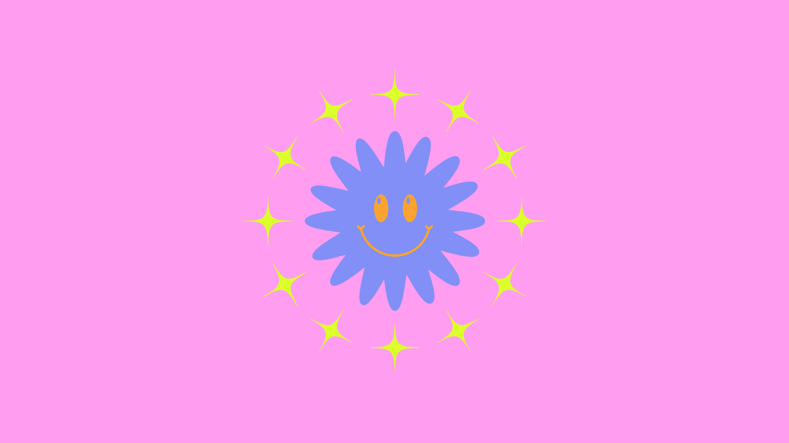
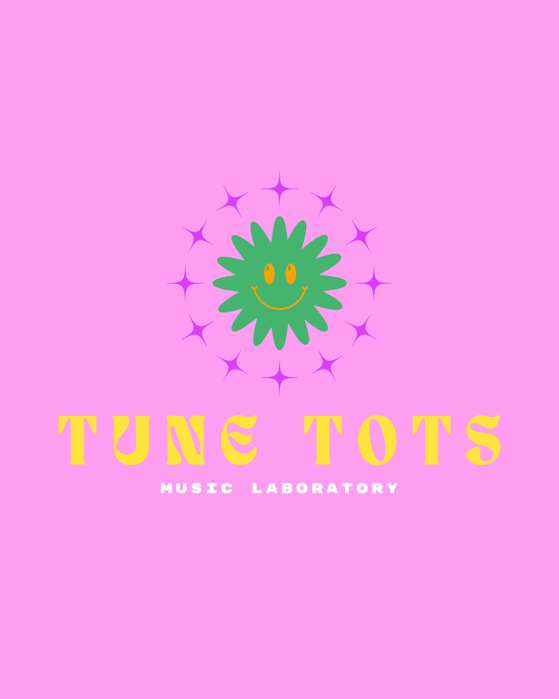

ЗВУК
Запись окружающего мира, семплинг, работа с тембром и высотой звука.
◌
MUSIC LABORATORY / DILIJAN
Tune Tots — детская музыкальная лаборатория, где музыка изучается через игру, эксперименты, технологии и собственное творчество.

WHAT IS TUNE TOTS?
Музыкальный инструмент может быть чем угодно: голосом, столом, бутылкой, веткой, полевым шумом или электронным устройством.
В Tune Tots ребёнок не ждёт несколько лет, чтобы наконец начать создавать. Мы соединяем музыкальную теорию, технологии, звукорежиссуру и игру — и превращаем знания в практику сразу.
THE COURSE
За восемь встреч дети пройдут путь от первого записанного звука до законченного музыкального произведения.
Финальный результат — собственный трек и опыт коллективного выступления в электронном оркестре Tune Tots с устройствами Playtronica.
INSIDE THE LAB
Запись окружающего мира, семплинг, работа с тембром и высотой звука.
Пульс, темп, ритмические рисунки и собственные биты.
Мелодия, интервалы, аранжировка и понимание того, как устроен трек.
Ableton Live, эффекты, основы звукорежиссуры и электронное творчество.
Эксперименты без страха ошибиться. Ищем идеи, а не правильные ответы.
Совместная импровизация, электронный оркестр и умение слушать друг друга.

PLAYTRONICA × TUNE TOTS
Playtronica позволяет превратить практически любой проводящий предмет в музыкальный инструмент. Ребёнок касается яблока, лимона или растения — и сразу слышит звук.
Удивление превращается в любопытство. Любопытство — в желание экспериментировать и учиться.
WHY A LABORATORY?
Практика раньше страха.
Новое знание сразу становится частью музыки.
Эксперимент вместо шаблона.
Ошибки могут стать началом новой композиции.
Творчество вместо соревнования.
Дети учатся слушать, поддерживать и создавать вместе.
THE PERSON BEHIND THE LAB
Композитор, саунд-дизайнер, мультиинструменталист, преподаватель и основатель Tune Tots Lab.
Выпускник Московской государственной консерватории им. П. И. Чайковского. Работал с Mercedes-Benz, Audi, McDonald's, Spotify, Playtronica и другими проектами; участвовал в Московских биеннале современного искусства.
Музыкой занимается практически всю жизнь и преподаёт детям, соединяя фундаментальное музыкальное образование с современными технологиями и экспериментом.
AT THE END
Не только с новыми знаниями, но с собственным треком, опытом коллективного выступления и ощущением: «Оказывается, я уже умею создавать музыку».
READY TO PLAY?
© 2026Напишите нам, чтобы узнать ближайшую дату набора и записать ребёнка.
НАПИСАТЬ TUNE TOTS ↗